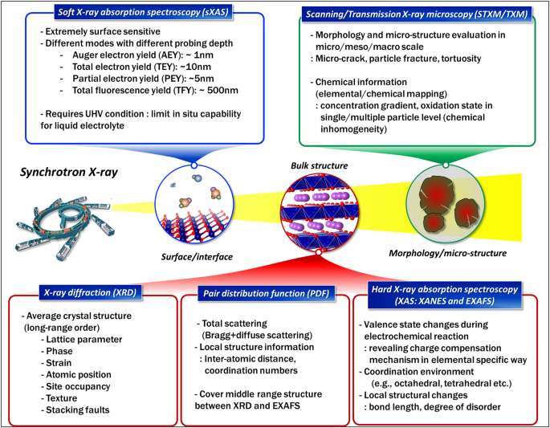
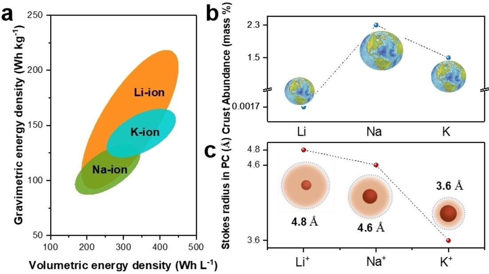
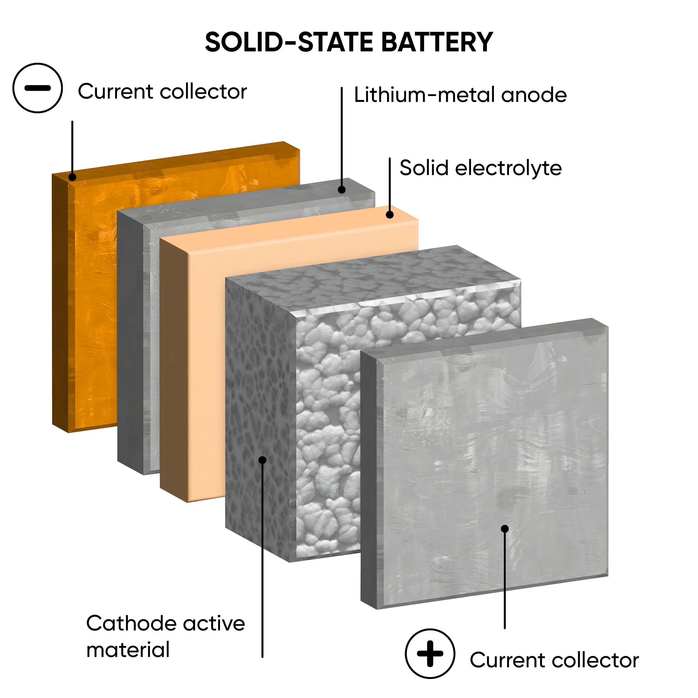

Research Themes
Our research is dedicated to advancing next-generation energy storage systems through fundamental understanding and engineering of electrode and electrolyte materials. We primarily focus on the following key areas:
Advanced Synchrotron-based X-ray Characterization
We specialize in utilizing cutting-edge, non-destructive analytical techniques to unravel the complex phenomena occurring within batteries. By employing In situ / Operando synchrotron-based methods such as X-ray Absorption Fine Structure (XAFS) including XANES and EXAFS, X-ray Diffraction (XRD), and high-resolution X-ray Imaging, we track the dynamic local structure evolution and phase transformations of electrode materials during charge and discharge cycles. Our approaches enable an unprecedented understanding of reaction heterogeneity, intermediate phase formations, and localized structural degradations in real time, serving as a critical foundation for designing robust and long-lasting energy storage materials.

Next-Generation Alkali-Ion Batteries
As the demand for high-energy density and economically viable power sources escalates, our laboratory drives the development of next-generation Lithium-ion (Li-ion), Sodium-ion (Na-ion), and Potassium-ion (K-ion) battery systems. A major part of our effort is dedicated to exploring amorphous and highly disordered materials, as well as multi-component nanocomposite anodes. Through rigorous electrochemical evaluation and multi-scale characterizations, we elucidate the multi-step phase transitions and fundamental storage mechanisms that govern their performance. By fundamentally controlling the electrochemical reactivity and structural stability, we aim to bridge the gap between academic discovery and practical commercial viability for large-scale applications.

All-Solid-State Batteries
To overcome the inherent flammability issues associated with conventional liquid electrolytes, we are at the forefront of developing All-Solid-State Batteries (ASSBs). Our research targets the rational design and synthesis of superionic solid electrolytes and investigates their complex interfacial phenomena with various electrode configurations. We deeply analyze the ion conduction mechanisms, identify the root causes of interfacial resistance, and design novel surface-coating strategies to suppress detrimental side reactions and dendrite growth. By deciphering the unique degradation mechanisms within the solid-state environment, we pave the way for the ultimate safety and superior energy density of next-generation solid-state architectures.
